-mysql 프론프트 창으로 테이블 확인
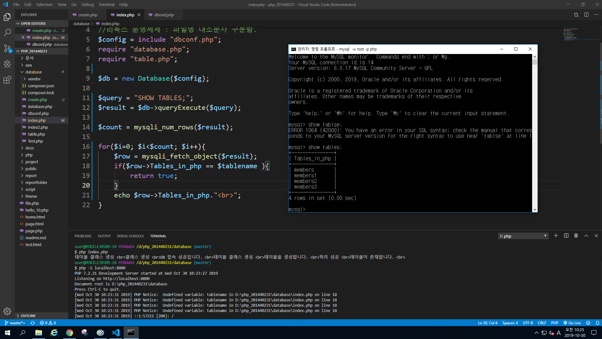
- 실행 결과 및 localhost 연결
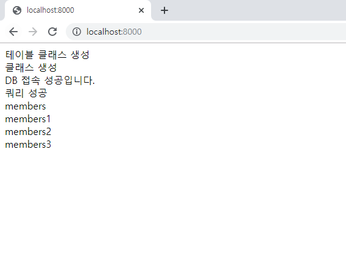
-기존에 있는 github 사이트 말고 새로운 사이트 생성
-그 후 README.md 파일 생성 후 git add로 추가
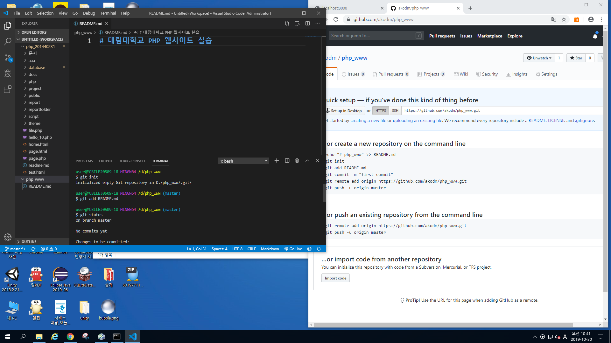
-php_www 라고 생성 성공
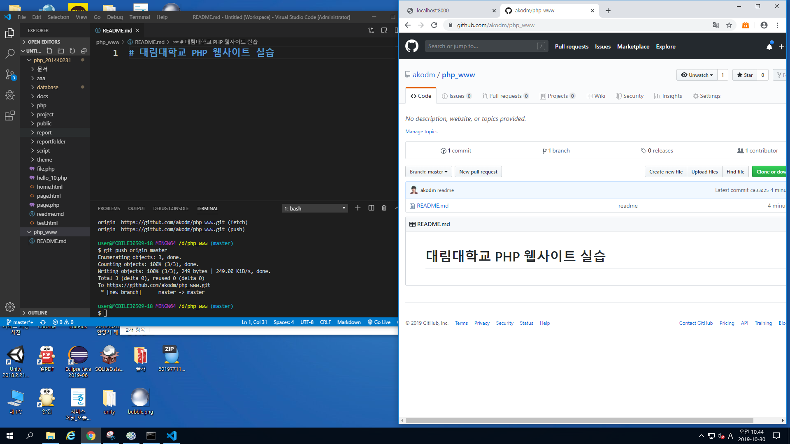
-새로운 곳에서 출력해 보기
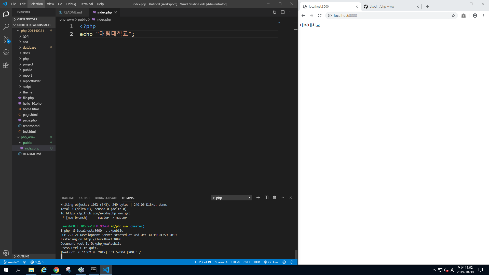
-dbconf.php 파일을 만든 뒤 include해서 출력해 보기
-그러면 배열 형태로 출력이 가능하다.
-Module database를 require로 해서 출력하기
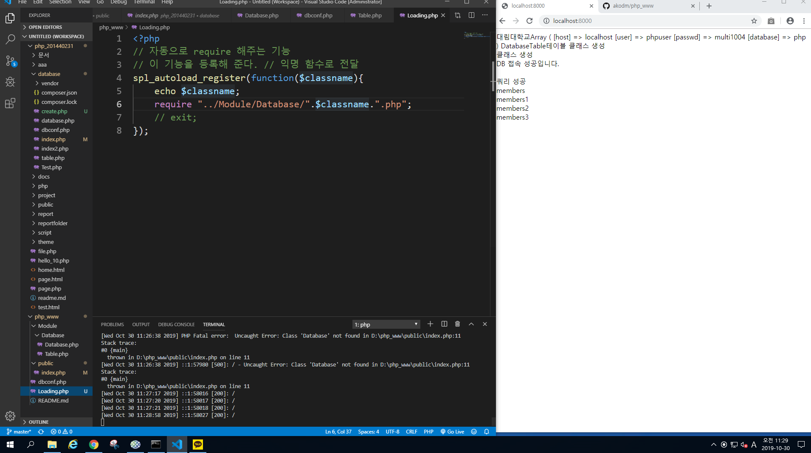
-간단한 namespace로 해주기
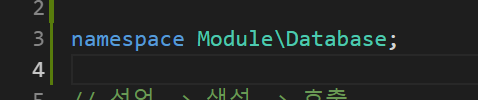
-생성자 메소드
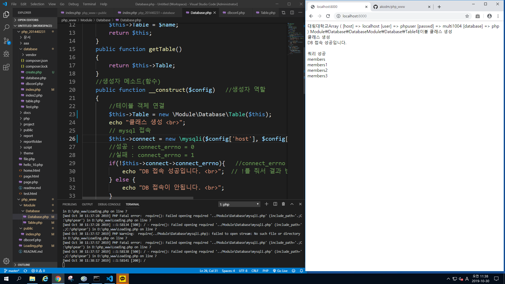
-html 내에 테이블 생성하기
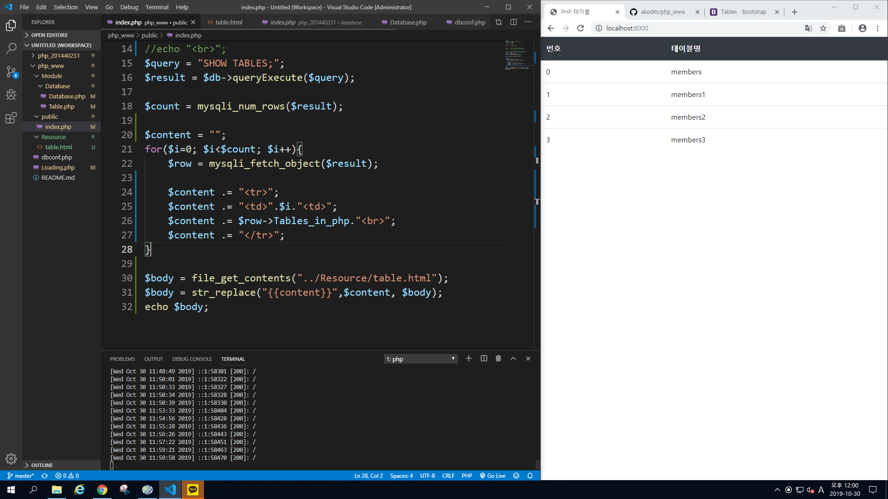
-테이블 명들 설정하기
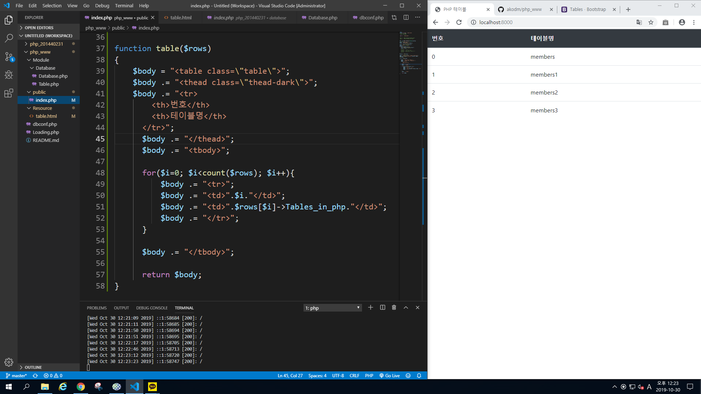
-URI 서버로 열기
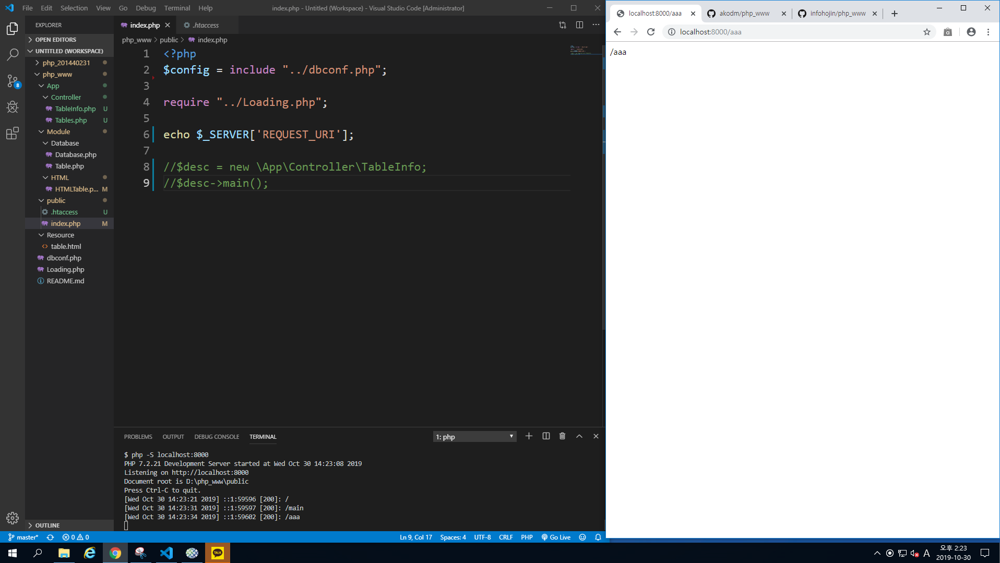
-uris를 if문 이용해 출력하기
-Resousce 폴더를 만들고 그안에 index.html 파일을 만들고 사이트가 만들어진다.
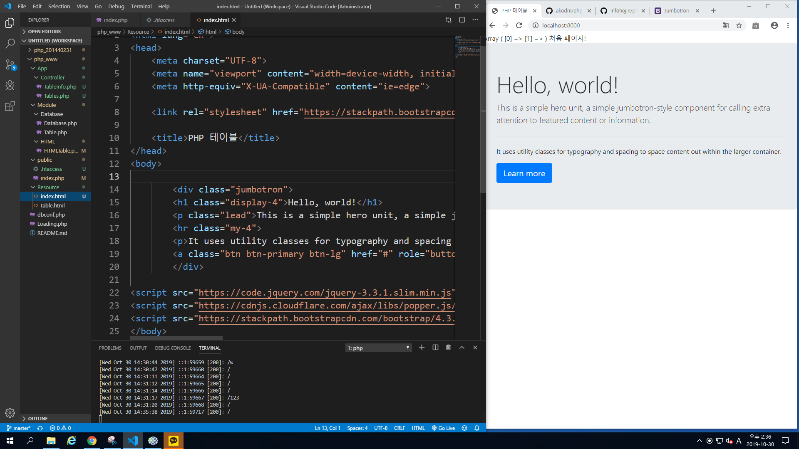
-테이블에 배열 추가와 쿼리문 추가
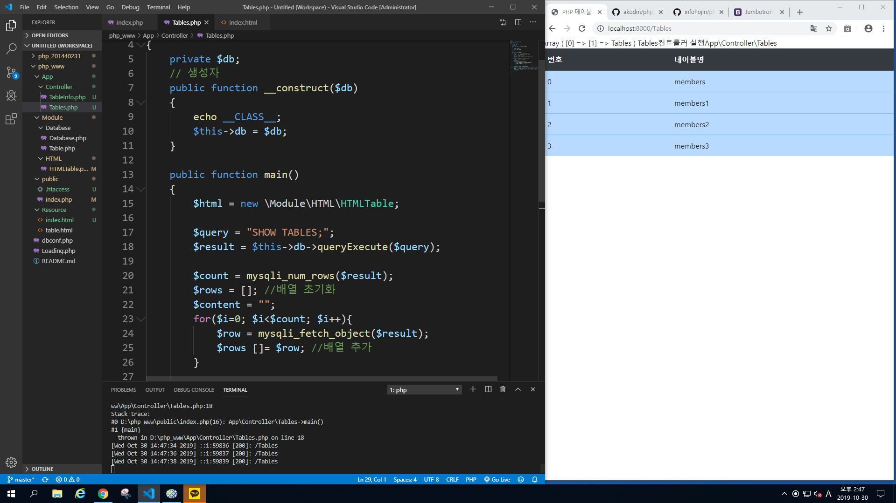
-member에 관한 것들 모두 출력 (desc) 사용
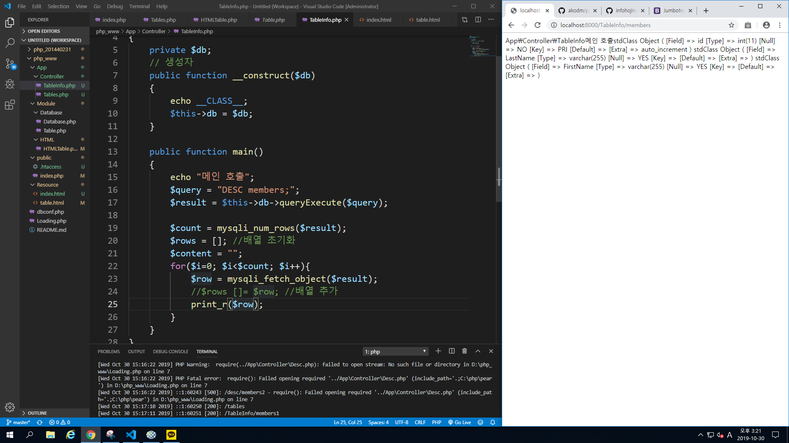
-primary key 같은것들 설정 성공
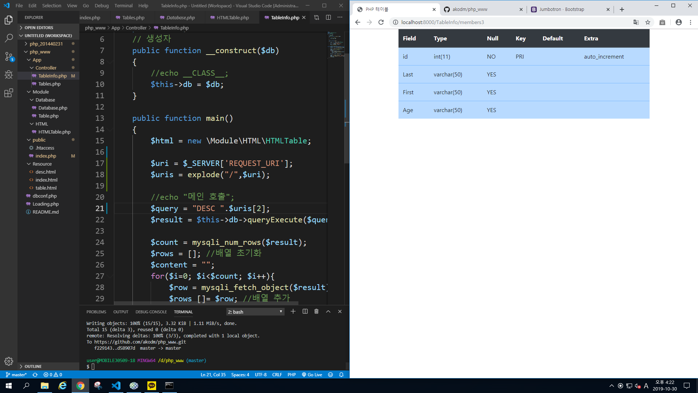